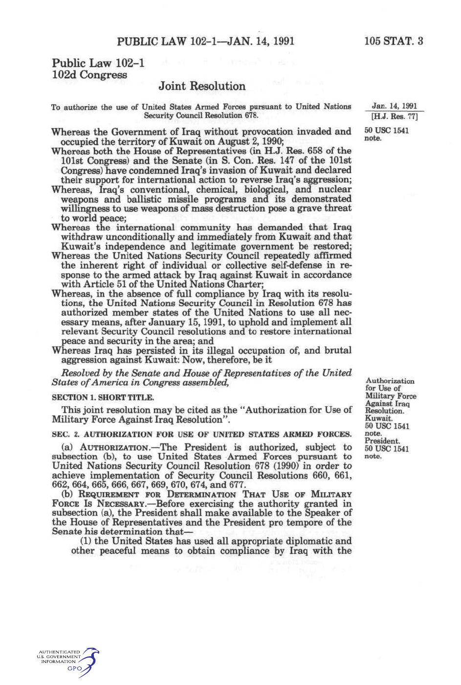

U.S. FOREIGN POLICY / WEEK 13
U.S. power after the Soviet Union
- 1990–2000
- Dr. Murat Toman
U.S. FOREIGN POLICY / WEEK 13
The main idea
- After the Soviet Union’s collapse, the United States had unusual global strength. It still faced difficult choices about war, humanitarian crises, trade, and international cooperation.
- Alliances, institutions, and public acceptance could make cooperation easier. They did not remove conflicting interests or guarantee support. Different audiences could judge the same action differently. Assessing the 1990s requires comparing goals and consequences across cases instead of giving the entire decade one score.
U.S. FOREIGN POLICY / WEEK 13
Where this week fits in history
| When | Selected event |
|---|---|
| 1987 | INF Treaty |
| 1991 | Gulf War and dissolution of the Soviet Union |
| 2001 | September 11 attacks and authorization for force |
| 2015 | Iran nuclear agreement announcement |
U.S. FOREIGN POLICY / WEEK 13
History through a source

- This document is evidence of an official statement or decision. Its wording and appearance help us identify the source, but its promises still need to be checked against evidence of actions and results.
- Use the linked transcription or PDF to read the text. Ask who issued it, what it claims, and whose viewpoint is missing.
U.S. FOREIGN POLICY / WEEK 13
Key words explained
- Unipolarity: A distribution of power in which one state has much greater capabilities than other states.
- Humanitarian intervention: Outside action, sometimes military, justified as protecting people from severe harm.
U.S. FOREIGN POLICY / WEEK 13
Key words explained
- Globalization: Growing connections across borders, including trade, investment, production, and communication.
- Mission scope: The boundaries of what an operation is intended to accomplish.
U.S. FOREIGN POLICY / WEEK 13
Greater power did not settle priorities
- The United States faced fewer constraints from a rival superpower, but Americans still disagreed about its role. Having the greatest capabilities did not make every goal achievable.
- Leaders needed to decide which interests mattered most and what costs they would accept. Other actors continued to make their own choices.
U.S. FOREIGN POLICY / WEEK 13
The Gulf War had a defined territorial objective
- The 1991 Gulf War concerned Iraq’s invasion of Kuwait and involved a coalition. Its authorization connected U.S. action with particular goals and international decisions.
- A limited military objective differs from rebuilding a state or transforming its political system. Clear boundaries help explain what success would mean.
U.S. FOREIGN POLICY / WEEK 13
Humanitarian crises raised hard choices
- Somalia, Rwanda, Bosnia, and Kosovo posed different problems involving violence, authority, and outside action. Support for intervention depended on perceived duties, risks, casualties, and the prospects of success.
- Intervention and nonintervention both had consequences. One formula cannot explain every decision.
U.S. FOREIGN POLICY / WEEK 13
Globalization created winners and losers
- Economic integration connected trade and investment with foreign-policy goals. It also affected jobs, industries, and political coalitions at home.
- Markets could create opportunities while distributing costs unevenly. Domestic disagreements over globalization were therefore part of foreign policy, not a separate issue.
U.S. FOREIGN POLICY / WEEK 13
Legitimacy still mattered
- Alliances, institutions, and public acceptance could make cooperation easier. They did not remove conflicting interests or guarantee support.
- Different audiences could judge the same action differently. Assessing the 1990s requires comparing goals and consequences across cases instead of giving the entire decade one score.
U.S. FOREIGN POLICY / WEEK 13
Politics at home and abroad
- At home: Trade disputes, jobs, congressional politics, and sensitivity to casualties shaped choices.
- Abroad: The United States supported an international order while responding selectively to crises.
- The connection: domestic support and resources affect what leaders can promise abroad. International events can change domestic priorities.
U.S. FOREIGN POLICY / WEEK 13
How power worked
| Form of influence | How it operated in this week |
|---|---|
| Hard power | Coalition warfare, air campaigns, and sanctions could impose costs or stop actions. |
| Soft power | Democratic claims and international cooperation could attract support, but acceptance varied across audiences. |
- Institutions and markets can attract participation but also generate unequal costs and resistance.
U.S. FOREIGN POLICY / WEEK 13
A worked explanation
- Does being the strongest state mean being able to control every outcome?
- No. Capabilities do not eliminate resistance, local political problems, limited resources, or disagreement about goals.
- Why this matters: Alliances, institutions, and public acceptance could make cooperation easier. They did not remove conflicting interests or guarantee support. Different audiences could judge the same action differently. Assessing the 1990s requires comparing goals and consequences across cases instead of giving the entire decade one score.
U.S. FOREIGN POLICY / WEEK 13
Practice with the documents
- Identify the goal described in the 1991 authorization for force.
- Find a broader ambition in the 1999 National Security Strategy.
- Explain why a limited military goal and a broad international ambition need different measures of success.
U.S. FOREIGN POLICY / WEEK 13
How to support an answer
- A claim is what you argue. Evidence is a specific passage, event, or finding that supports it. Explain the connection between them.
- Example structure: “The document claims ____. This suggests ____. It cannot by itself show ____.”
- A speech can establish what a speaker said. Evidence of actions and consequences is needed to judge whether the policy worked.
U.S. FOREIGN POLICY / WEEK 13
What to remember
- Unipolarity describes capabilities, not unlimited political control.
- Bounded military objectives and political reconstruction require different strategies.
- Economic integration produces domestic distributional conflicts.
- Legitimacy varies across domestic, allied, international, and local audiences.
U.S. FOREIGN POLICY / WEEK 13
Reading guide
- Authorization for Force Against Iraq (1991) A document from the period. Use it to identify what officials claimed or authorized, then check other evidence for the consequences. External source page; access may vary.
- National Security Strategy (1999) A document from the period. Use it to identify what officials claimed or authorized, then check other evidence for the consequences. External source page; access may vary.
Authorization for Force Against Iraq (1991) — External source page; access may vary.
National Security Strategy (1999) — External source page; access may vary.
U.S. FOREIGN POLICY / WEEK 13
Reading guide
- The Gulf War, 1991 A retired historical background essay. Use it for context, and compare its account with scholarship and other perspectives. External source page; access may vary.
- From Colony to Superpower: U.S. Foreign Relations since 1776 A scholarly narrative companion for historical periods. Select the relevant period; no unverified page assignments are supplied. Publisher record; full text may require institutional access.
The Gulf War, 1991 — External source page; access may vary.
Office of the Historian Milestones: retired series, retained online for historical reference; not a current-policy source.
From Colony to Superpower: U.S. Foreign Relations since 1776 — Publisher record; full text may require institutional access.
U.S. FOREIGN POLICY / WEEK 13
Reading guide
- Soft Power A foundational theoretical reading, to be tested against historical cases rather than treated as a universal explanation. JSTOR article; full text may require institutional access.
Soft Power — JSTOR article; full text may require institutional access.
U.S. FOREIGN POLICY / WEEK 13
Video and audio guide
- March 24, 1999: Statement on Kosovo Evaluate the public rationale for humanitarian intervention through NATO.
- The U.S.-Russia Stalemate, With Mary Elise Sarotte Revisit choices about NATO and relations with Russia after the Soviet collapse.
March 24, 1999: Statement on Kosovo — Free provider page; external player may require consent or be region-dependent
Primary-source video, audio and transcript; the speech is an argument to evaluate, not a neutral account.
The U.S.-Russia Stalemate, With Mary Elise Sarotte — Free provider page; external player may require consent or be region-dependent
December 14, 2021 retrospective; distinguish evidence about the 1990s from the episode’s then-current situation.
U.S. FOREIGN POLICY / WEEK 13
Using the sources carefully
- Linked readings and media offer particular viewpoints. Compare them with the lesson and other evidence. Some sources require institutional access.
- Media links and descriptions were checked when the course resources were prepared. Full playback was not tested.